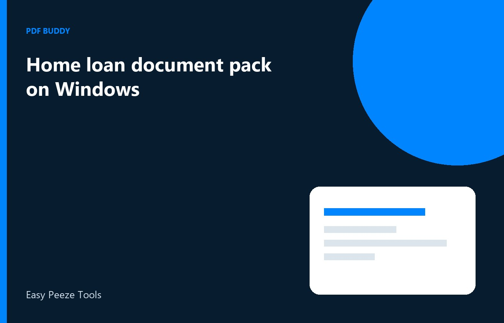

A home loan file in India is a stack of proofs the lender already listed: identity, income, bank statements, and papers for the flat you want to buy. The delay usually starts when those arrive as mail attachments, photos, and a CD from the builder, all dumped into one PDF the credit team cannot split. On Windows you can keep each proof as its own file, with the applicant name and the month in the title, and resend one item when the bank asks again. Do that before the sanction meeting. A pack that opens cleanly is faster than a long explanation in the branch.
Separate the income proofs
Salary slips, Form 16, and appointment letters answer different questions. Slips show recent pay. Form 16 shows tax already reported for a year. The appointment letter shows that the employer exists. Merging them into Income.pdf forces a credit officer to hunt. Export three PDFs, or whatever count the sanction checklist names. If you are paid into two banks, do not hide the second account inside the first statement. Lenders compare credits on the slip with credits on the statement. A missing month creates a query even when your job is stable.
Name slips with the month, such as Salary-Sep2026.pdf, and keep them in date order inside the folder. If the employer sends a password-protected slip, type the password you already have from HR or from the mail. You cannot finish this pack by removing a password you were never given. Ask HR to resend the open file or the known password. Photographing a slip from a laptop screen is a last resort: the numbers blur, and the bank may ask for the original PDF again.
- Latest salary slips for the months the bank listed
- Form 16 for the assessment year they named
- Bank statements that show the same salary credit
- Any incentive letter only if the checklist asks for it
Bank statements without a full passbook dump
The sanction form usually wants a set number of months, not every page since you opened the account. Export or download that range and stop. A 40-page passbook adds size and invites questions about old transfers that are not part of this loan. If the PDF from net banking is one long file, split out the months you need and save that smaller file with the date range in the name. Keep the full download in a private folder. Send the shorter one.
Check that the account holder name on the statement matches the name on the application. A joint account needs the bank's own note of who the holders are, not a cropped header. Do not delete rows to make the balance look different. That is not preparing a file. If a page is sideways, rotate it so the narration can be read without turning the laptop. Officers print these packs. A sideways page is an easy reason to mark the statement unreadable.
Property papers stay in their own set
The builder agreement, the cost sheet, and the society or title notes are not income. Put them in a Property subfolder and follow the names the builder used, plus the flat number. If the builder mailed one scan with blank backs between every page, remove the blank pages before you send it so the page count matches the index. Do not rearrange clauses. The bank and the lawyer need the same order as the signed set. Your job is a clean copy, not a new draft of the contract.
If you and a co-applicant both earn, give each person a folder. Mixing a spouse's slips into the primary file without a label is how files get sanctioned against the wrong income. The application already has a place for co-applicant documents. Match that place. When a page is rejected, replace that page only and bump a version in the file name, such as Sale-Agreement-v2.pdf, so nobody opens yesterday's mail by habit.
A folder you can send to the next lender
People apply to more than one bank. Build the pack once on the PC and copy it, rather than rebuilding from WhatsApp each time. A local folder with Income, Bank, Identity, and Property survives a change of officer. Update only the item that went stale, such as a new salary slip, and leave the rest. Pdf Buddy can merge a short set when one lender insists on a single PDF, and it can split that bundle again for the next lender. Do the work on Windows. Do not upload the whole pack to a random site just to join two slips.
After sanction, keep the pack. Disbursement often asks for the same statements plus a fresh demand letter from the builder. If your only copy lived in a chat, the quality is already worse. Store PDFs with readable names. You are organising papers you hold for a loan you are applying for. If a document is missing, request it from the employer, the bank, or the builder. Do not recreate figures in an editor to fill a gap.
Questions people actually ask
Can I send one PDF named Home-Loan.pdf? Send one file only if that lender's mail says to combine everything. Otherwise keep slips, statements, and property papers separate so a query can be answered with one replacement. A single bundle looks tidy and slows every correction, because the officer must reopen the whole set to swap one month.
The statement PDF from the bank is password protected. What then? Open it with the password shown in net banking or the SMS the bank already sent, then save the months the lender asked for. If you do not have that password, request it from the bank. Do not try to strip a lock you cannot unlock.
Should both co-applicants share one folder? Use one parent folder for the application and a subfolder per person. Label slips with the person and the month. Shared loose files get attached to the wrong borrower when someone is in a hurry on sanction day, and the credit team then pauses the file.
Keep the loan folder on your PC and resend a single file when the bank asks. Pdf Buddy, by Easy Peeze Tools, is a Windows desktop PDF editor that works on the PC. Your slips are not uploaded to a random website. The free tier is 2 files a day. Pricing starts at ₹149. See pricing.